本页阅读逻辑
先看「待核」清单，知道哪些还不能当定论。再看两个字的篆书对照：每个字至少有大篆（金文）和小篆两种写法。然后看自制的字形演变图。接着看偏旁对应的礼器实物（豆、玉、以及「示」「耳」「口」「壬」的字源）。字源有分歧的地方，把各家说法并列写出。最后是圣经里「圣」「礼」相关经文的线索，只作文化上的对照。
课堂上如果要用下面这些点，请先当作尚未敲定。
建议课堂上并置这两种写法：左边是金文（大篆系统），象人而突出耳朵，旁边有口；右边是《说文》小篆，已经写成「从耳呈声」的结构。
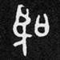
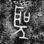
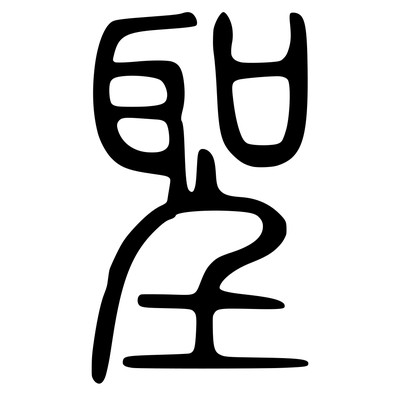
金文辞例（文字线索，便于备课，不是拓片）：师望鼎有「王用弗忘圣人之后」；王孙钟有「肃哲圣武」；中山王器有「夫古之圣王」。参见港中大「聖」字条。这些器的可公开用原器照片，本次没有稳定取到，故只给辞例，不配器形图。
「禮」在甲骨、金文里通常先写作初文「豊」，还没有左边的「示」。小篆才固定成从示、从豊。《说文》还收了古文「礼」，今天的简体字沿用这一形。所以课堂上至少可以给孩子看三种写法：金文「豊」、小篆「禮」、古文／简体「礼」。
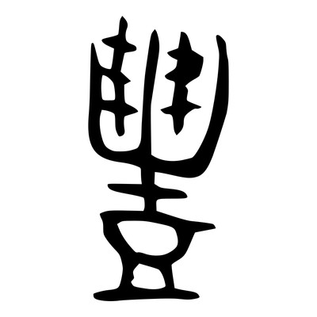
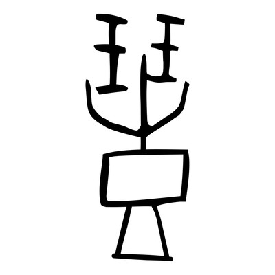
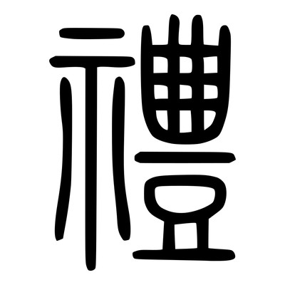
简体「礼」不是随便少写几笔，而是《说文》已经著录的古文写法。完整对照见下方演变图。
没有找到同时覆盖甲骨、金文、小篆、隶书、楷书、并且授权清楚的现成「聖」「禮」演变图，因此按已核实字形自制。图表本身用可读宽度保存（不是把教学图压成 400 像素宽，否则说明文字会看不清）；点图可看大图。
「豆」是古代高圈足的盛食器，常有盖，下有柄和底座，用来盛腌菜、肉酱等。商代已出现，春秋战国最常见，有陶、木、青铜等质地；后来也用作礼器。《说文》：「豆，古食肉器也。」《尔雅·释器》：「木豆谓之豆，竹豆谓之笾，瓦豆谓之登。」郭璞注：「豆，礼器也。」注意：后来「豆」才假借为豆麦的「豆」。是否要把「豊」的下部直接说成这件器物，见第 11 节，各家有分歧。
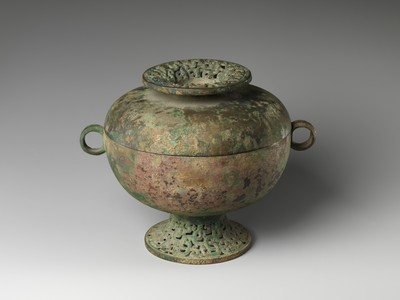
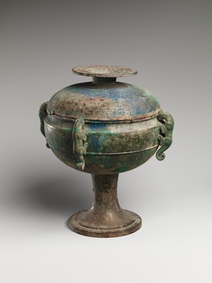
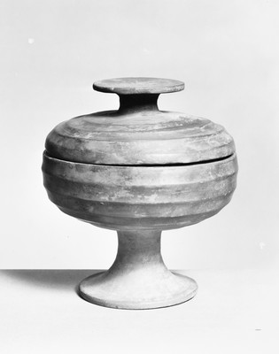
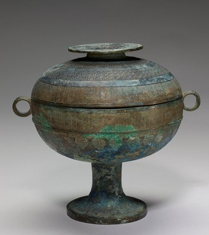
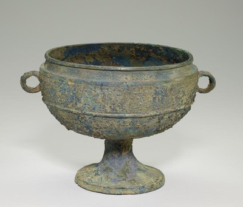
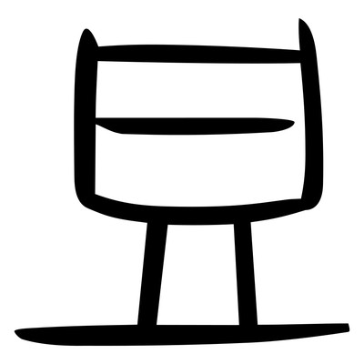
「豊」的上部，王国维、林澐都看成「玨」（两串玉，或成对的玉）。古代礼仪常用玉帛。《论语·阳货》：「礼云礼云，玉帛云乎哉？」下面这些是博物馆开放的礼玉实物，用来让孩子看见璧、琮、圭、璋、璜，而不是凭空想象。它们是「玉曾经被用在祭祀和礼仪里」的证据，不是「豊」字的实物还原。
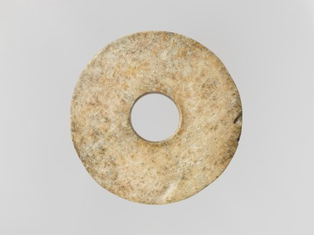
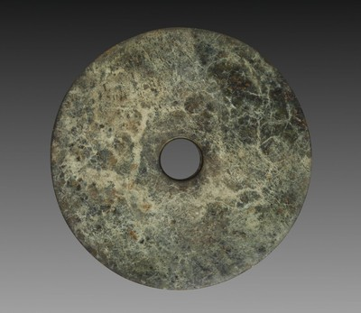
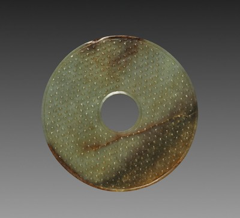
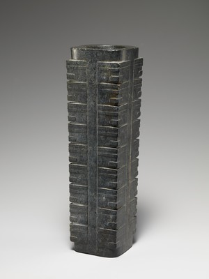
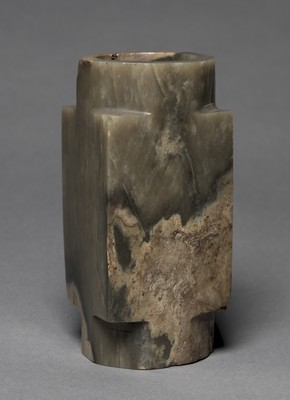
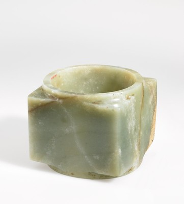
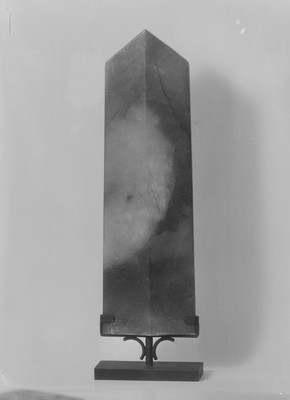
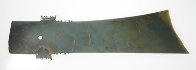
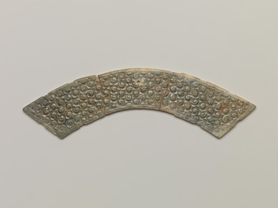
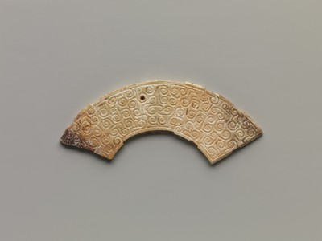
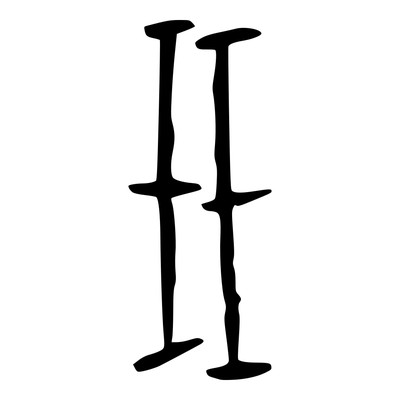
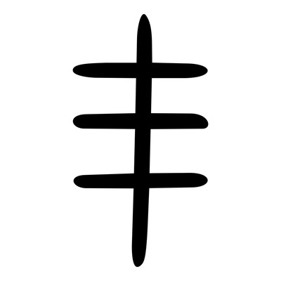
《说文》给「禮」的分析是「从示从豊」。示部的字，后来多与祭祀、神事有关。但「示」本身像什么，古文字学家并没有定论（见第 11 节）。下面只用字形来讲，不配一张「这就是商代神主」的实物照片——本次没有找到既清晰、又授权清楚、可以确认的商代神主或祭台原器图。
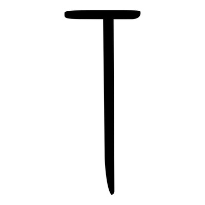
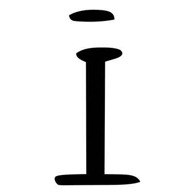
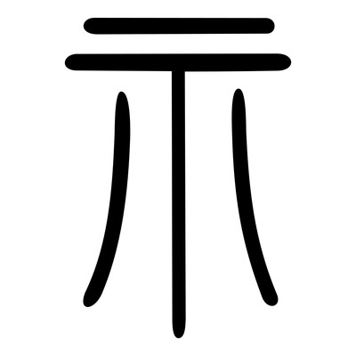
港中大的通解（课堂可引用）写得很清楚：甲骨文从人、从耳、从口，象人而突出耳朵，旁边有口，声音从口出、入于耳。本义是听闻，由听闻广博再引申为通达，再引申为圣贤。古「聖」「聲」「聽」形近义通。金文里「聖」也常表示听。《风俗通》：「圣者，声也，通也。言其闻声知情。」
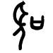
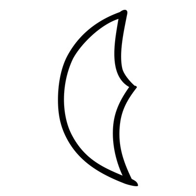
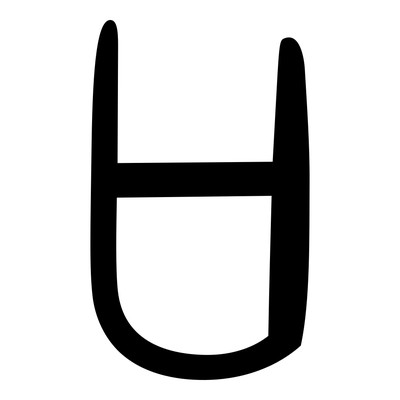
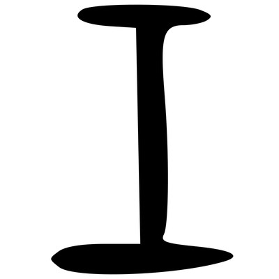
如果课堂上要介绍林澐一说（「豊」从玉、从鼓），需要让孩子看见「壴」是鼓的象形：上有装饰或鼓冠，中为鼓身，下为座。这和「豆」的器形很接近，这也是后来容易写成「豆」的原因。
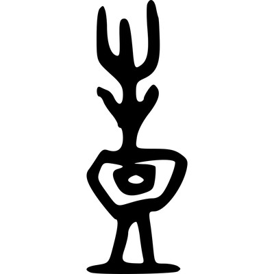
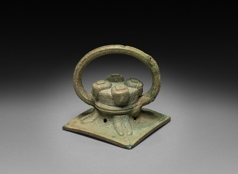
金文「豊」最常被提到的名器是西周早期的天亡簋（也称大豊簋），铭文有「王又（有）大豊（禮）」。下面的器形是潍坊博物馆所藏复制品，必须向孩子说明：这不是原器。原器现藏中国国家博物馆，本次没有找到可公开使用的原器照片。
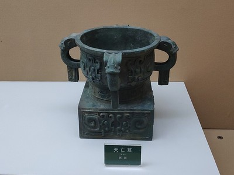
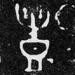
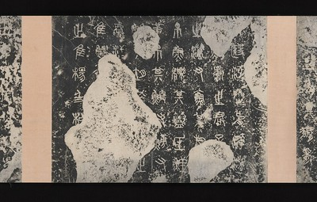
峄山碑是著名的小篆范本，但据常见录文，文中没有「聖」「禮」，本页不用它作这两个字的出处。秦公簋同此，铭文是否含这两字待核，暂不用。
港中大写「说法甚多，未有定论」：丁山以为设杆祭天；徐中舒以为象木表或石柱之神主；姚孝遂以为下部的点象灌酒；《说文》则谓天垂象、日月星。甲骨文更像立着的杆、牌或小台。课堂上可以诚实地说：这个偏旁和祭祀有关，但「它到底画的是什么」现在还没有一家说能压倒其余。
请务必这样用：先讲清楚中国古文字里，「聖」与听、通达有关，「禮」与事神、玉帛、礼器有关。然后再说，圣经里也有「圣」和敬拜、礼仪的话。这是文化上的对照，不是证明「这个汉字里藏着圣经」，也不是把中国的祭礼等同于旧约的敬拜。
经文已用信望爱 API 核对和合本（1919，公版），并核过返回的书卷名。
「你晓谕以色列全会众说：你们要圣洁，因为我耶和华―你们的 神是圣洁的。」（利未记 19:2）
「彼此呼喊说：圣哉！圣哉！圣哉！万军之耶和华；他的荣光充满全地！」（以赛亚书 6:3）
「因为经上记着说：「你们要圣洁，因为我是圣洁的。」」（彼得前书 1:16）
「 神说：「不要近前来。当把你脚上的鞋脱下来，因为你所站之地是圣地」；」（出埃及记 3:5）
「当以圣洁的（的：或译为）妆饰敬拜耶和华；全地要在他面前战抖！」（诗篇 96:9）
「所以，弟兄们，我以 神的慈悲劝你们，将身体献上，当作活祭，是圣洁的，是 神所喜悦的；你们如此事奉乃是理所当然的。」（罗马书 12:1）
「原来前约有礼拜的条例和属世界的圣幕。」（希伯来书 9:1）
「世人哪，耶和华已指示你何为善。他向你所要的是甚么呢？只要你行公义，好怜悯，存谦卑的心，与你的 神同行。」（弥迦书 6:8）
弥迦书 6:6–8 可以和《论语·阳货》「礼云礼云，玉帛云乎哉」放在近旁对照：两边都提醒人，礼仪和祭物本身不是全部。但两段话的信仰对象和救恩背景并不相同，不要拼成一句「中西圣贤一个意思」。
更完整的表格见同目录 sources.csv。主要依据如下。
| 类别 | 来源 | 授权 | 用法 |
|---|---|---|---|
| 字源通解 | 港中大字库·聖、禮、豊、示、豆 | 课堂限用 | 字说、金文甲骨例、课堂引用 |
| 说文原文 | 港中大转引《说文》；可再用 ctext《说文解字》对照 | 古籍公版 | 字义引文 |
| 王国维《释礼》 | 林文彦文中转引《观堂集林》卷六，见《古璽入印析探》；原书仍建议用纸本或合法扫描核对 | 原书公版，论文有版权 | 只作学说出处，不贴论文全文 |
| 林澐《豊豐辨》 | 《古文字研究》第 12 辑（1985）；港中大字库、裘锡圭《大豊（禮）簋铭新释》（复旦出土文献中心）均引此文 | 论文有版权 | 只作学说出处 |
| 说文篆字、甲骨金文矢量图 | 维基共享 Shuowen / oracle / bronze SVG，公有领域 | 可公开用 | 范字、演变图 |
| 礼器实物 | 大都会（CC0）、克利夫兰（CC0）、Mia（Public Domain） | 可公开用 | 豆、玉器 |
| 天亡簋复制品 | 共享资源，Ngguls 摄，CC BY-SA 4.0 | 可公开用（须署名、相同方式共享） | 名器器形，须标明复制品 |
| 石鼓文旧拓 | 大都会藏拓，共享 CC0 | 可公开用 | 大篆风格，非本课用字字例 |
| 和合本经文 | 信望爱 API，version=unv，已核 chineses 字段 | 1919 和合本公版 | 经文核对 |
| 楷书 | 台湾全字库正楷体 | 政府开放授权／OFL，须署名 | 演变图中的楷字 |


_MET_DP363292.jpg){kind=link}